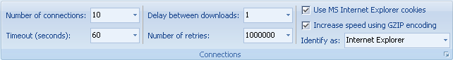

Используйте вкладку Интернет для изменения некоторых настроек интернет-соединения. Эти настройки доступны также в диалоге Настройки.

Количество соединений - Установка количества одновременно загружаемых Offline Explorer Pro файлов.
Таймаут - если ответа сервера нет в течение некоторого времени ожидания (таймаут) в секундах, то соединение будет прервано и будет загружаться следующий файл.
Задержка между загрузками - Загрузив файл, Offline Explorer Pro будет ожидать в течение указанного в секундах времени перед стартом загрузки следующего файла. Также вы можете использовать случайные задержки времени для того, чтобы Offline Explorer Pro эмулировал чтение страниц человеком. Например, 2-10. Это означает, диапазон задержки перед загрузкой каждого файла будет между 2 и 10 секундами. Поддерживаются также нецелочисленные задержки, например: 0.7 или 2.5-3.7.
Количество повторов - Если загрузка файла неудачна из-за некоторой ошибки или превышения времени ожидания, будет выполнен повтор загрузки.
Использование MS Internet Explorer cookies - Это полезно для загрузки некоторых защищённых сайтов, которые хранят пользовательскую информацию в файлах cookie.
Увеличить скорость используя кодирование GZIP - Offline Explorer Pro сообщает серверам запрос на получение выходных файлов в сжатом формате для достижения наивысших скоростей загрузки.
Идентифицировать как - Иногда необходимо изменить идентификацию, которую Offline Explorer Pro самостоятельно отправляет другим web-серверам.

Скорость - Выбор ограничения скорости загрузки файлов.
Дозвон - Открывает диалог Настройки - раздел Dialup для установки автоматического дозвона перед стартом загрузки.
Отсоединение и выключение - Разрешает вам установить разрыв соединения с Интернет или выключение компьютера после завершения загрузки.

Прокси - Открывает диалог Настройки - раздел Прокси.
Использовать альтернативный метод соединения - Используется библиотеки загрузок MS IE. Это может быть полезным для некоторых защищённых паролями сайтов.
Режим PASV для FTP-загрузок - Изменяет путь получения Offline Explorer Pro файлов с FTP-сайтов. Включение этой опции обеспечивает метод наибольшей совместимости.